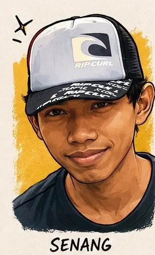
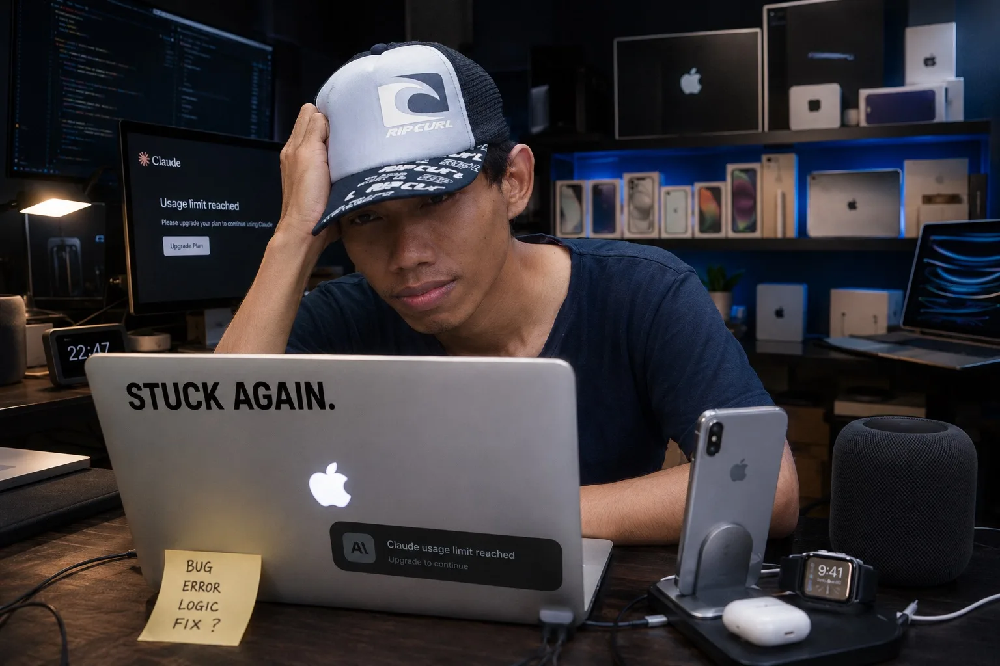
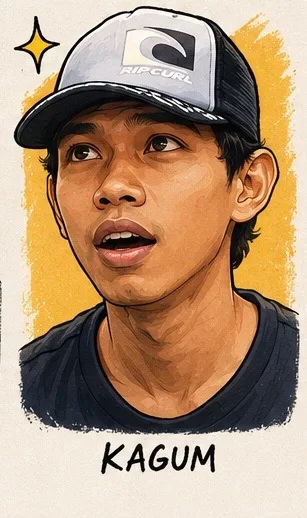
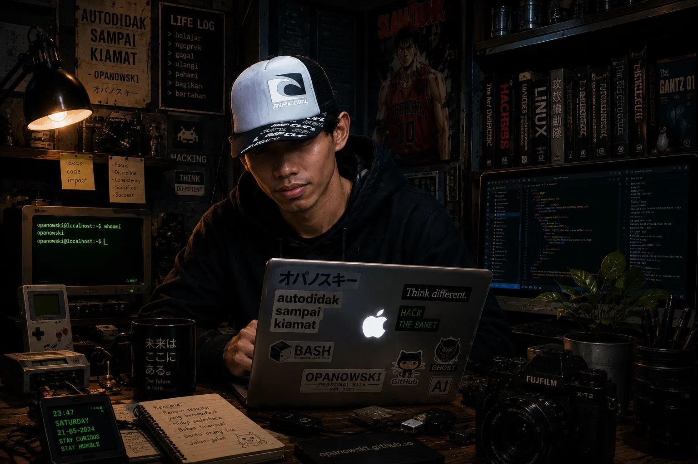

Subuh, 30 Mei 2026. Top Kopi Gula Aren masih mengepul. Di layar MacBook Pro Mid 2015 yang udah 10 tahun setia menemani, sebuah kotak chat kecil muncul di pojok kiri bawah blog ini. Teks pertama menyapa: "Halo bro! Gw Om Opan 👋"
Gw ketik: "pisang sebagai kulkas maksudnya gimana??" — dan dia jawab dengan benar. Lengkap, natural, gaya Om Opan beneran.

"Alhamdulillah ya Allah. Ini momen yang bakal gw inget seumur hidup — chatbot pertama gw, jalan di static site, gratis total. 🙏"
1. Awal Mula: Ide yang Keliatan Gila
Semuanya berawal dari satu pertanyaan sederhana yang gw tanyain ke Claude:
bisa ga diterapin AI chat widget di sini?
Claude: Bisa banget. Web statis bukan hambatan — selama ada
serverless proxy, lo bisa pasang AI chatbot di mana aja.
Web gw — opanowski.github.io — itu static site. HTML murni. Dihost di GitHub Pages. Nggak ada backend, nggak ada server, nggak ada database. Basically cuma kumpulan file HTML yang numpang di server gratis GitHub.
Dan gw mau pasang AI chatbot di sana. Keliatan impossible? Ternyata nggak.

2. Tantangan Utama: API Key Jangan Bocor
Masalah pertama yang langsung muncul: kalau mau manggil AI API dari browser, API key-nya bakal kelihatan. Siapapun yang buka F12 di browser bisa liat key-nya.
Solusinya: pakai proxy server. Satu request mampir ke server dulu, server yang nyimpen API key, server yang forward ke AI. Rekomendasinya: Cloudflare Workers. Gratis 100.000 request/hari, tanpa kartu kredit, global.
3. Episode 1: Misi Dapat API Key Gratis
Rencana awal: pakai Claude API (Anthropic). Tapi ada satu syarat — top up minimal $5 credit dulu. Gw ketawa baca itu. Anti hutang, anti kartu kredit — itu prinsip hidup gw. Masa mau langsung dilanggar di hari pertama project?
4. Episode 2: Knowledge Base Om Opan
Biar chatbot bisa jawab pertanyaan seputar Bunker Opanowski, dia butuh "bahan bacaan" — semua info tentang gw, Villa Ciracas, projects, motor, kebun, filosofi hidup.
Claude bantu crawl web dan compile semuanya jadi satu file knowledge-base.txt. Isinya: tentang Om Opan, Villa Ciracas, aset properti, setup gadget, motor & otomotif, Project Aviary, Project Mulsa, urban farming, log harian blog, semua media sosial.

"Gw ga nyangka knowledge base-nya selengkap itu. Claudenya crawl web gw, compile semua info jadi satu file rapi. AI bantu bikin AI — ini namanya leverage. ✨"
5. Episode 3: Deploy Cloudflare Worker
Ini bagian yang butuh sabar ekstra karena UI Cloudflare berubah dari yang diinstruksiin.
1. Daftar Cloudflare — gratis, pilih Personal
2. Buat Worker baru — nama: bunker-omopan
3. Paste kode worker.js (proxy + knowledge base + persona)
4. Settings › Variables: tambah GEMINI_API_KEY (encrypted)
5. Deploy
# Test di browser — URL worker:
→ bunker-omopan.opanowski.workers.dev
Response: "Method not allowed"
✓ BAGUS — Worker hidup! Dia nolak GET, cuma mau POST dari widget.
6. Episode 4: Widget Chat — Floating Bubble
Desain yang disepakati: floating bubble di pojok kiri bawah, bisa diklik, expand jadi kotak chat. Dark theme, earthy/warm — cocok sama vibe Bunker Opanowski.
Widget dibuat dalam satu file HTML snippet. Untuk inject ke semua halaman blog sekaligus, dibuatin script bash yang otomatis nyisipkan widget sebelum tag </body> di setiap file .html.
Injecting widget to: index.html
Injecting widget to: blog/blog-mulsa.html
Injecting widget to: blog/blog-aviary.html
... (40+ file HTML lainnya)
✓ Done. 43 files updated.
$ git add .
$ git commit -m "feat: tambah widget Tanya Om Opan"
$ git push
✓ Pushed to opanowski/opanowski
7. Bug Paling Nyebelin: 5 Jam Nyangkut
Widget sudah terpasang. Tapi ada masalah: di desktop bisa normal. Di HP (Oppo Reno 4, Chrome) — input text dan tombol kirim tidak bisa diklik.

"5 jam debug. Z-index? Dicoba. Browser HP? Dicoba. Event listener? Dicoba. Semua ga ada yang work. Gw hampir nyerah beneran. 😤"
Investigasi makin dalam pakai DevTools Console di Mac, mode simulate HP 360px:
document.addEventListener('touchstart', function(e){
console.log('TOUCH:', e.target.id, e.target.className);
}, true);
// Output mencurigakan:
TOUCH: donate-fab ← ini harusnya widget Om Opan!
TOUCH: donate-fab
TOUCH: donate-fab
Ketemu! div#donate-fab nutupin area input widget —
ukuran 210x163px, nangkep semua touch event!
Jam 20.33 — widget fix beres. Dicatat dalam sejarah Bunker.
8. Upgrade ke Cloudflare AI
Beberapa hari kemudian, ada evaluasi: Gemini API gratis tapi ada limitnya dan latency-nya lumayan. Cloudflare AI lebih cocok karena Worker sudah ada di Cloudflare — tinggal aktifin AI binding.
- semua kode panggilan Gemini API
- GEMINI_API_KEY environment variable
// DITAMBAH:
+ env.AI.run("@cf/meta/llama-3.3-70b-instruct-fp8-fast", {
+ messages: [systemPrompt, ...userHistory]
+ })
// TIDAK BERUBAH:
= Knowledge base Om Opan — utuh
= System prompt persona — sama
= CORS & security — sama
= Format request dari HTML blog — tidak perlu diubah
// Dashboard Cloudflare:
Settings › Bindings › Add › Workers AI › Variable: AI
✓ Deploy. Done. Subuh 04.51 — chatbot hidup sempurna.

9. Arsitektur Final: Bagaimana Semuanya Bekerja
10. Teknologi yang Dipakai: Semua Gratis

"Cloudflare Workers + AI adalah infrastruktur kelas enterprise yang bisa dipakai orang kecil tanpa biaya. Ini bukan mimpi — ini beneran ada dan beneran gratis. 💪"
11. Pelajaran yang Gw Ambil
📌 Penutup
"Tanya Om Opan" sekarang hidup di setiap halaman Bunker Opanowski. Bukan sekadar chatbot — tapi representasi digital dari filosofi hidup ini: autodidak bisa bikin sesuatu yang keren, gratis bukan berarti murahan, dan setiap masalah pasti ada solusinya — tinggal sabar dan mau belajar.
Kalau ada yang mau nanya soal urban farming, aviary, motor DIY, filosofi hidup, atau sekadar ngobrol santai — tombol hijau di pojok kiri bawah halaman ini siap menemani.
Itu gw. Om Opan. Ngobrol sambil ngopi gula aren di teras Villa Ciracas.
Tetap autodidak, tetap berkah! 🏴Udah coba ngobrol sama "Tanya Om Opan" di pojok kiri bawah? Tanya apapun — dia siap! 🤖